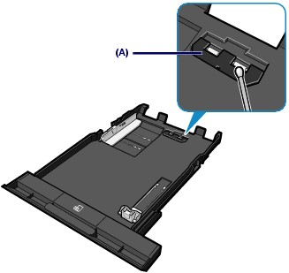

If the Pad in the Cassette is smeared with paper powder or dirt, two or more sheets of paper may be ejected. Follow the procedure below to clean the Pad in the Cassette.
You need to prepare: cotton swab
Pull out the Cassette from the machine, and remove all the papers.
Clean the Pad (A) sideways with a moistened cotton swab.
 Important Important
|

If the problem is not resolved, contact the service center.